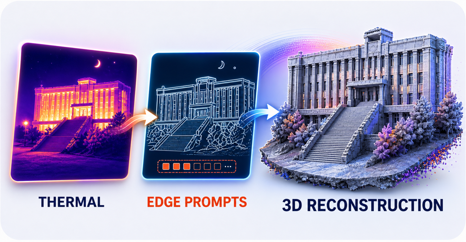

|
Zuntao Liu Hi, I am a third-year master student at Northeastern University, advised by Prof. Zheng Fang and in close collaboration with Prof. Chen Wang. Before that, I completed my bachelor degree at Northeastern University. My current research focuses on Robot Learning, Spatial Intelligence, Generative Models, and Multimodal LLMs. My long-term research goal is to develop scalable and robust generalist robotic systems that can understand, reason about, and interact with the 3D physical world, ultimately advancing embodied AI in complex and dynamic environments. |

|
Publications |
|
 |
TEPR: Thermal Edge-Prompted Geometry Learning for Multi-View 3D Reconstruction
Zhiheng Li, Zuntao Liu, Weihua Wang, Zheng Fang IJCV, 2026 paper (soon) |

|
Vision-Language Memory for Spatial Reasoning
Zuntao Liu, Yi Du, Taimeng Fu, Shaoshu Su, Cherie Ho, Chen Wang ECCV, 2026 project page arXiv |

|
Spike-EVPR: Deep Spiking Residual Networks with SNN-Tailored Representations for Event-Based Visual Place Recognition
Zuntao Liu*, Yaohui Li*, Chenming Hu, Delei Kong, Junjie Jiang, Zheng Fang IEEE Robotics and Automation Letters (RA-L), 2026 paper |

|
A Coarse-to-fine Event-based Framework for Camera Pose Relocalization with Spatio-temporal Retrieval and Refinement Network
Yuhang Song, Hao Zhuang, Junjie Jiang, Zuntao Liu, Zheng Fang ICRA, 2025 paper |

|
Nonlinear Motion-Guided and Spatio-Temporal Aware Network for Unsupervised Event-Based Optical Flow
Zuntao Liu, Hao Zhuang, Junjie Jiang, Yuhang Song, Zheng Fang ICRA, 2025 project page arXiv |
|
Thank Jon Barron for sharing his website's source code. |